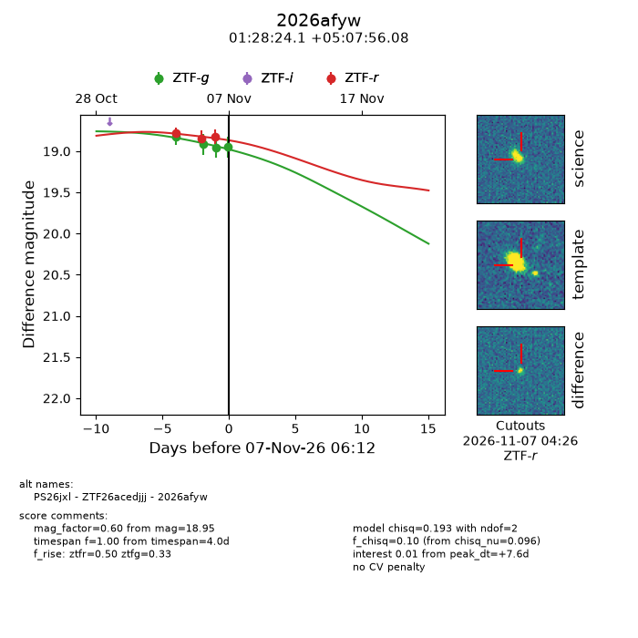
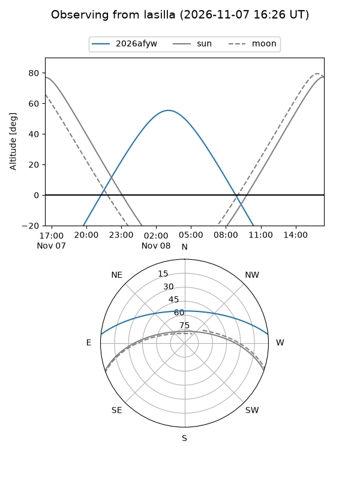
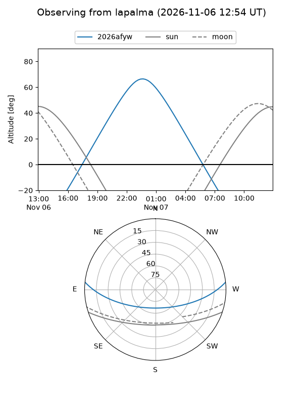
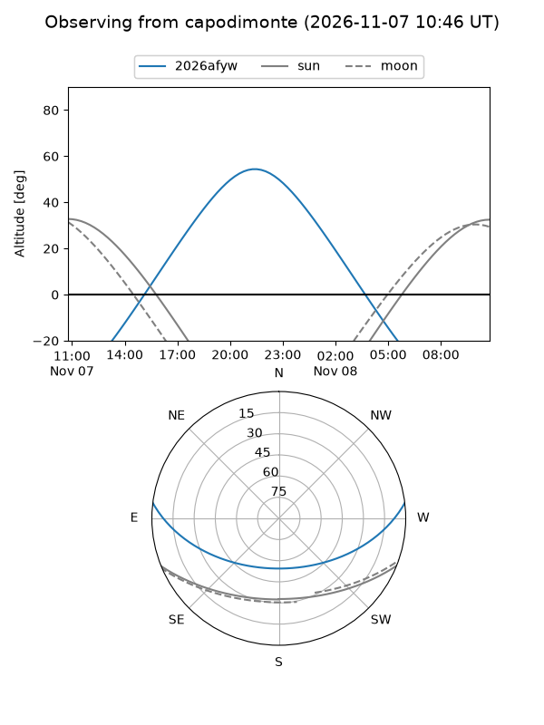
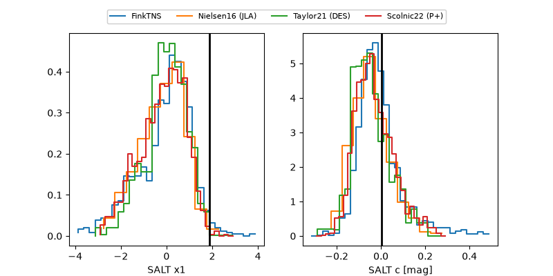

2026afyw
Target 2026afyw at 2026-11-07 06:14
Aliases and brokers:
FINK-ZTF: ztf.fink-portal.org/ZTF26acedjjj
Lasair-ZTF: lasair-ztf.lsst.ac.uk/objects/ZTF26acedjjj
ALeRCE-ZTF: alerce.online/object/ZTF26acedjjj
YSE-PZ: ziggy.ucolick.org/yse/transient_detail/2026afyw
TNS name: wis-tns.org/object/2026afyw
Direct TNS query: direct search
alt names
ZTF26acedjjj (ztf,fink_ztf)
2026afyw (tns,yse)
PS26jxl (panstarrs)
Coordinates:
equatorial (ra, dec) = 22.1005,+5.13224
equatorial (HMS+DMS) = 01:28:24.12,+05:07:56.08
galactic (l, b) = (139.7885,-56.52491)
Flags:
peak dt: +7.6
Photometry:
last ztfg=18.95, ztfr=18.83
4 ztfg, 3 ztfr detections
Lightcurve

Visibility



Additional plots
